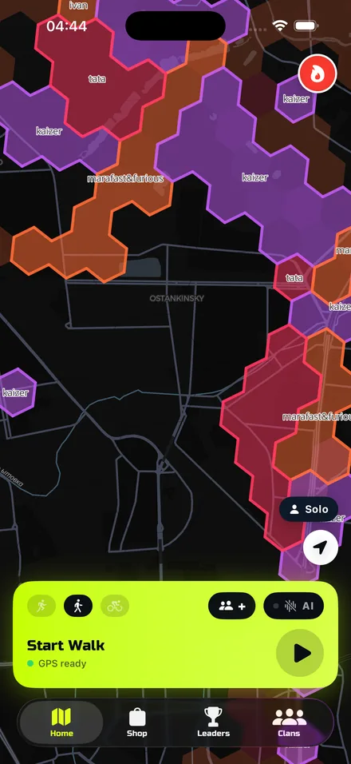
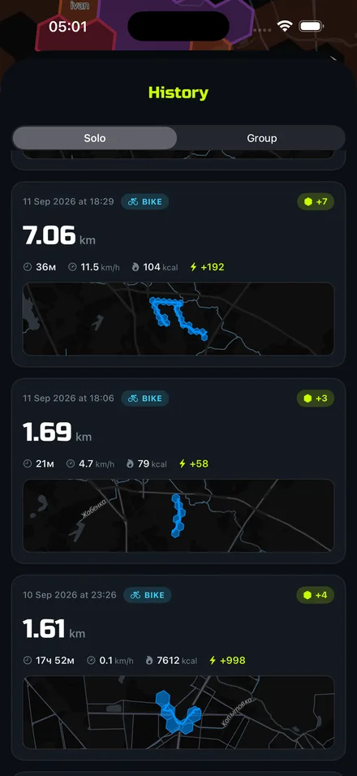
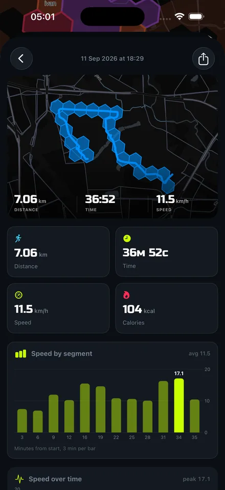
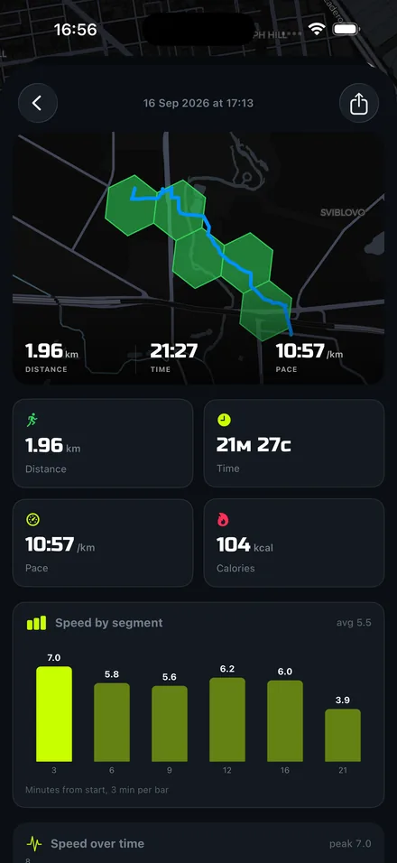
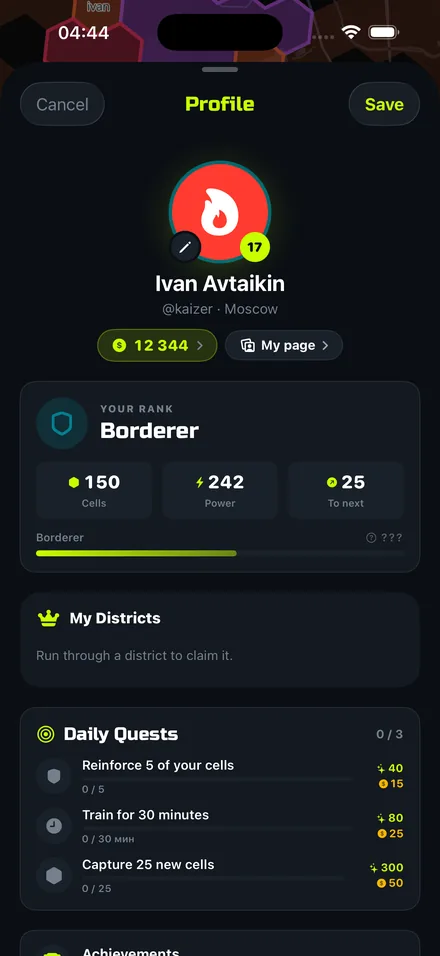
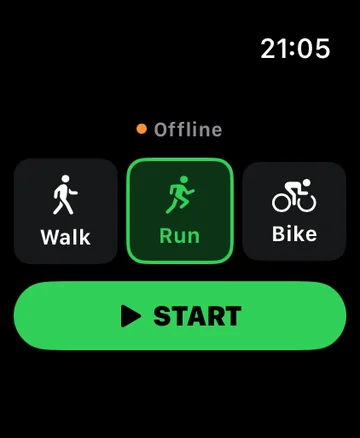
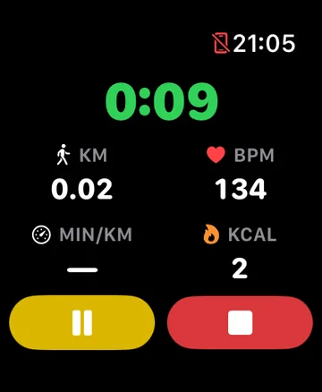
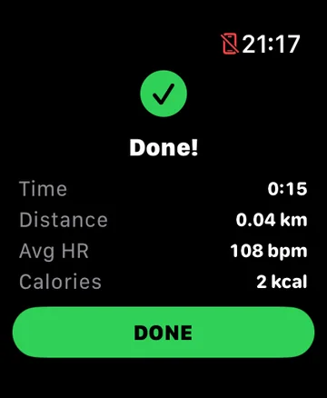

Press start and move
The app records your route — in your pocket, screen off. Walking, running and cycling all count.
Every walk, run and ride you record paints the hexagons you pass through. They stay yours until someone runs the same street and takes them back.
On the App Store. iPhone and Apple Watch.
No setup, no equipment. You already know how to do the hard part.
The app records your route — in your pocket, screen off. Walking, running and cycling all count.
The map is a grid of hexagons about 150 metres across. Cross one and it fills with your colour, right in front of you.
A cell belongs to whoever passed through it last. Your street is yours only until a neighbour goes for a run.
A step counter asks you to care about a number. This asks you to care about a street.
You find out the moment it happens. Getting it back takes one walk — and that is the whole point.
Join forces, colour a district together, argue about it in the clan chat. Territory is easier to hold as a group.
Every walk is checked on the server: speed, distance, plausibility. Fake routes earn nothing.
Recorded a run in another app or on your watch? Import it from Health and the territory counts.
Every walk turns into a picture of the route and the cells you took, ready for stories.
Real screens, real routes. Swipe.





Runcell on Apple Watch works paired with your iPhone. Start, glance, finish — the phone can stay in your pocket, and the summary reaches it on its own.



Something broken, a question, a report about another player — write to us. We answer within 24–48 hours on business days.
kaizerakafollen@gmail.com